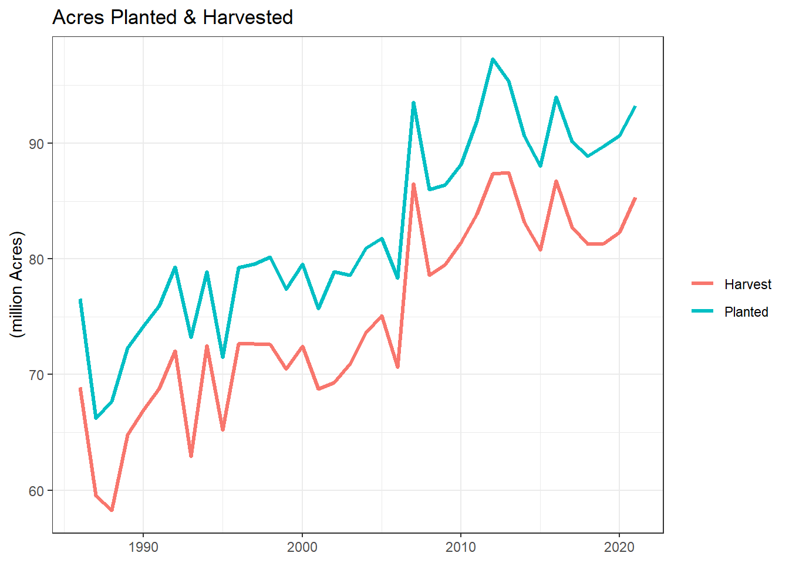
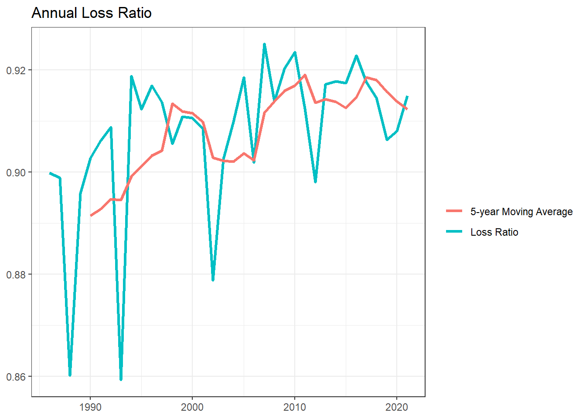
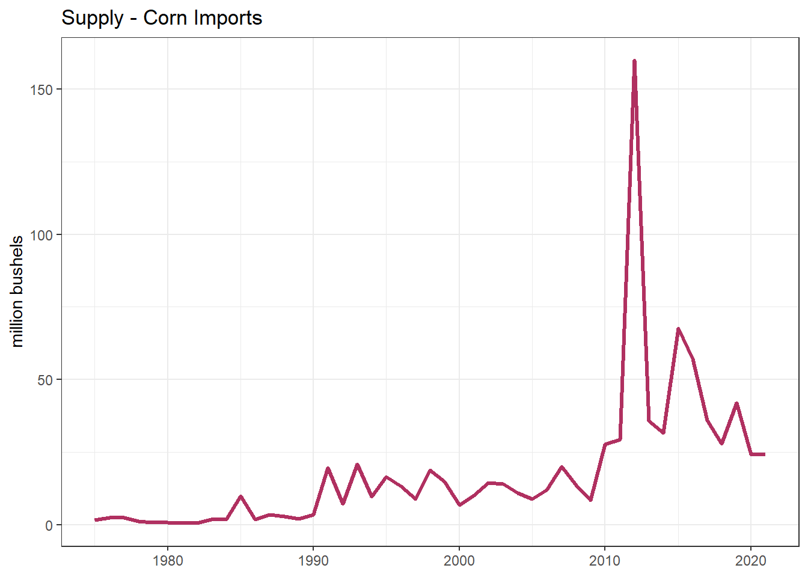
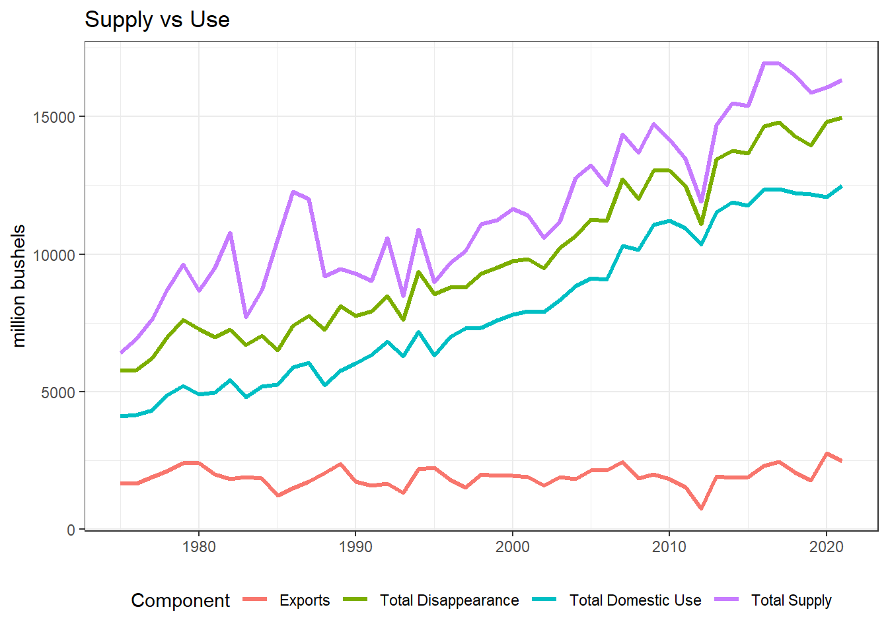
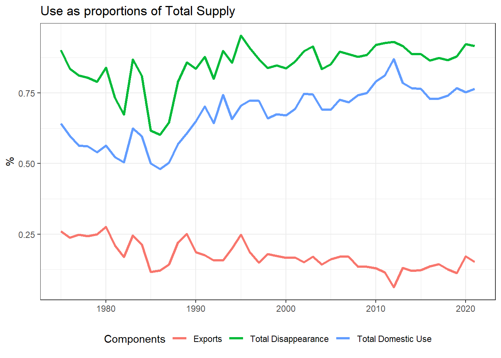
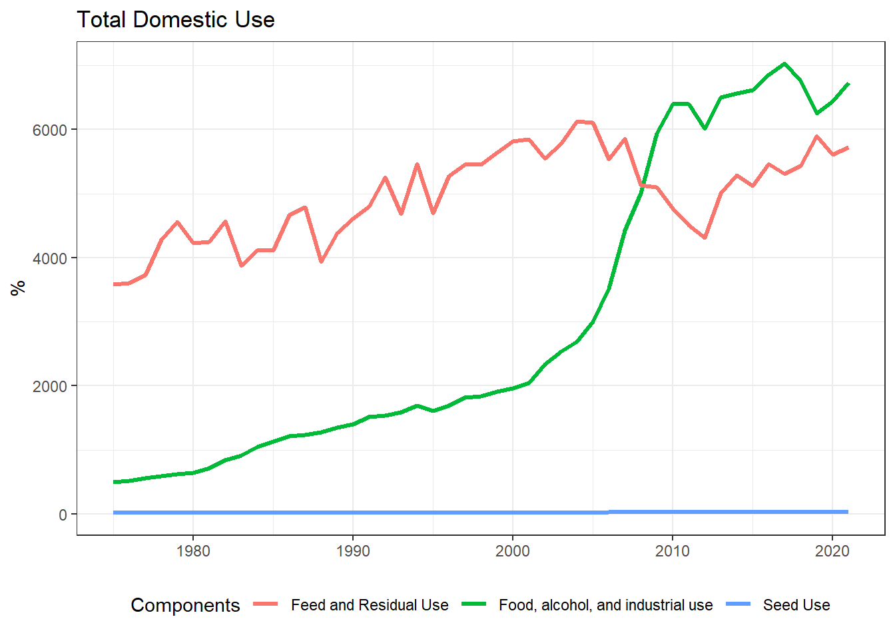
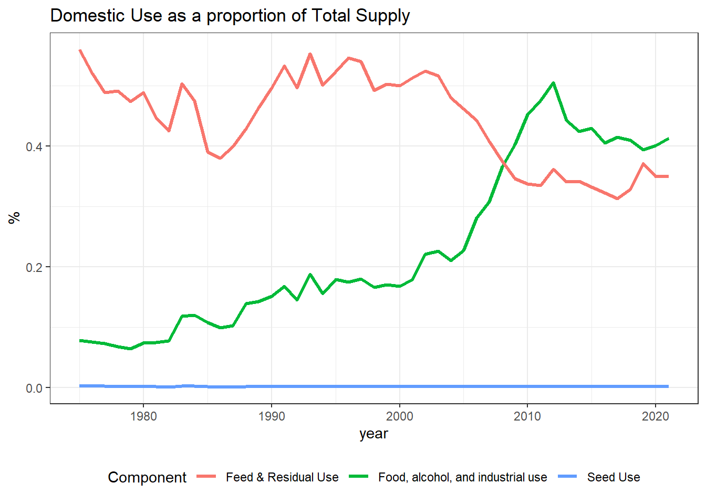
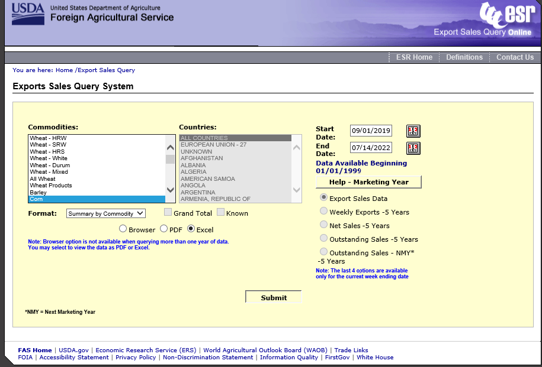
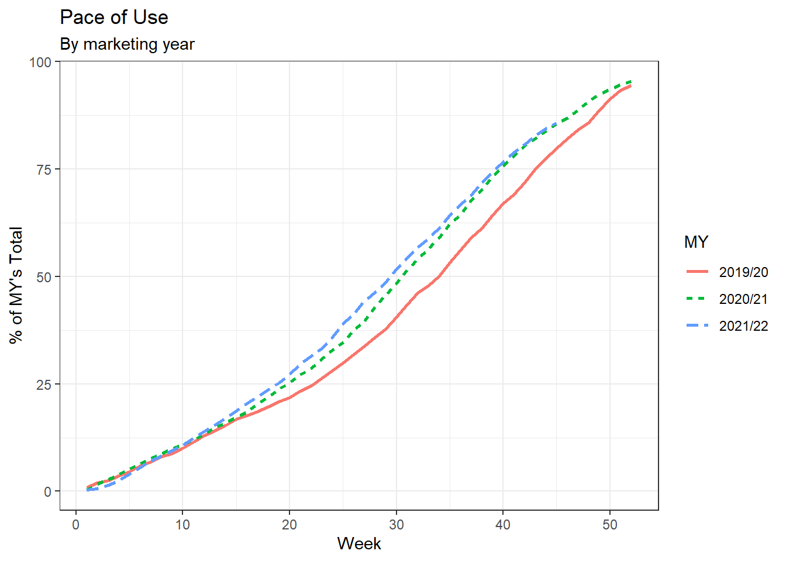

Module 5 Balance Sheet Forecasting
So far, we have discussed forecasting of a single variable at a time. However, forecasting practices are often not singular or independent.
A good example of it is forecasting supply and use categories within a balance sheet published in a WASDE report. While individual forecasting approaches may (need to) be applied, at the end of the day it is essential for the balance sheet to balance and individual forecasts to fit within a balance sheet structure and agreement. Furthermore, WASDE forecasts should be consistent with other reports, such as Grain Stocks, Export Sales and ethanol production.
A balance sheet is structured as follows:
\[\begin{align*} \text{Total Supply} &= \text{Beginning Stocks} + \text{Production} + \text{Imports} \\ \text{Total Use} &= \text{Domestic Use} + \text{Exports} \\ \text{Ending Stocks} &= \text{Total Supply} - \text{Total Use}\\ \end{align*}\]
Furthermore, WASDE forecasts should be consistent with other reports, such as Grain Stocks, Export Sales and ethanol production.
In this module we will discuss forecasting approaches required to consolidate different variables within a forecasting system, such as share of total, and pace of use approaches. These approaches are particularly relevant for utilization forecasts as they are constrained by forecasted supply levels.
5.1 Supply Forecasts
5.1.1 Production
Balance sheet forecasting typically starts on the supply side with forecasting yield, as we did in one of the previous modules. Once the yield forecast is produced, it becomes a foundation of a production forecast:
\[ \text{Production} = \widehat{\text{yield}} \times \widehat{\text{harvested acreage}}\].
In order to get a forecast of the harvested acreage, planted acreage is multiplied by the average loss ratio over the recent period. The loss ratio is calculated as the ratio of harvested to planted acreage and describes the share of the planted acreage that is harvested.
\[\begin{align*} \text{Loss Ratio} &= {\text{Harvested Acreage}\over \text{Planted Acreage}}\\ \implies \text{Harvested Acreage} &= \text{Loss Ratio}\times \text{Planted Acreage} \end{align*}\]
5.1.2 Activity I: Forecasting Corn Production
I. Download the planted and harvested data for CORN from Quick stats for 1986–2021, inclusive.
Calculate the average loss ratio over the last 5 years.
Calculate 2022 production estimate. Assume an estimate crop yield of 177 bushels/acre.
In a single step, we will
- Pull the data,
- Keep only the annual values and renamed
Valueasharvest, - Declare as a
tsibbleobject, - Store the variable also as
harvest.
## Downloading Harvest Data for Corn (1986 -- 2021)
harvest <- tidyUSDA::getQuickstat(
key = key,
program = "SURVEY",
sector = "CROPS",
group = "FIELD CROPS",
commodity = "CORN",
category = "AREA HARVESTED",
data_item = "CORN, GRAIN - ACRES HARVESTED",
domain = "TOTAL",
geographic_level = "NATIONAL",
state = "US TOTAL",
year = as.character(1986:2021)) %>%
filter(reference_period_desc == "YEAR") %>%
rename(harvest = Value) %>%
select(c(year, harvest)) %>%
as_tsibble(index = year)
harvest## # A tsibble: 36 x 2 [1Y]
## year harvest
## <int> <dbl>
## 1 1986 68907000
## 2 1987 59505000
## 3 1988 58250000
## 4 1989 64783000
## 5 1990 66952000
## 6 1991 68822000
## 7 1992 72077000
## 8 1993 62933000
## 9 1994 72514000
## 10 1995 65210000
## # ℹ 26 more rows- Similarly, for the planted acreage, we will
- Pull the data,
- Keep only the annual values and renamed
Valueasplanted, - Declare as a
tsibbleobject, - Store the variable also as
planted.
## Downloading Planted Acreage Data for Corn (1986 -- 2021)
planted <- tidyUSDA::getQuickstat(
key = key,
program = "SURVEY",
sector = "CROPS",
group = "FIELD CROPS",
commodity = "CORN",
category = "AREA PLANTED",
data_item = "CORN - ACRES PLANTED",
domain = "TOTAL",
geographic_level = "NATIONAL",
state = "US TOTAL",
year = as.character(1986:2021)) %>%
filter(reference_period_desc == "YEAR") %>%
rename(planted = Value) %>%
select(c(year, planted)) %>%
as_tsibble(index = year)
planted## # A tsibble: 36 x 2 [1Y]
## year planted
## <int> <dbl>
## 1 1986 76580000
## 2 1987 66200000
## 3 1988 67717000
## 4 1989 72322000
## 5 1990 74166000
## 6 1991 75957000
## 7 1992 79311000
## 8 1993 73239000
## 9 1994 78921000
## 10 1995 71479000
## # ℹ 26 more rowsAfter combining both data sets, we are able to compute the historical loss ratios. We can also compute the 5-year moving averages of the loss-ratio. This will help with the second portion of the activity.
corn <- left_join(harvest, planted, by = join_by(year)) %>%
mutate(loss.ratio = harvest/planted,
`5-MA_loss` = slider::slide_dbl(loss.ratio, mean, .before =4, .after = 0,
.complete = TRUE)
)
corn## # A tsibble: 36 x 5 [1Y]
## year harvest planted loss.ratio `5-MA_loss`
## <int> <dbl> <dbl> <dbl> <dbl>
## 1 1986 68907000 76580000 0.900 NA
## 2 1987 59505000 66200000 0.899 NA
## 3 1988 58250000 67717000 0.860 NA
## 4 1989 64783000 72322000 0.896 NA
## 5 1990 66952000 74166000 0.903 0.891
## 6 1991 68822000 75957000 0.906 0.893
## 7 1992 72077000 79311000 0.909 0.895
## 8 1993 62933000 73239000 0.859 0.895
## 9 1994 72514000 78921000 0.919 0.899
## 10 1995 65210000 71479000 0.912 0.901
## # ℹ 26 more rowsNow to produce some quick plots:
corn %>% ggplot() +
geom_line(aes(x = year, y = harvest/1e6,
color = "Harvest"), size = 1.1) +
geom_line(aes(x = year, y = planted/1e6,
color = "Planted"), size = 1.1) +
labs(title = "Acres Planted & Harvested",
y = "(million Acres)", x = NULL) +
guides(colour = guide_legend("")) +
theme_bw()
Now for the loss ratio:
corn %>% ggplot() +
geom_line(aes(x = year, y = loss.ratio,
color = "Loss Ratio"), size = 1.1) +
geom_line(aes(x = year, y = `5-MA_loss`,
color = "5-year Moving Average"),
size = 1.1) +
labs(title = "Annual Loss Ratio",
y = NULL, x = NULL) +
guides(colour = guide_legend("")) +
theme_bw()
We can now forecast the 2022 value of Production. At the time of writing, the planted acreage was 88,579,000.
yield.22 <- 177
planted.22 <- 88579000
harvest.22 <- last(corn$`5-MA_loss`) * planted.22
prod.22 <- yield.22*harvest.22
prod.22## [1] 143029593115.1.3 Other Supply Components
Once the production forecast is generated, it is added to beginning stocks and imports forecasts to result in total supply.
Beginning stocks are equivalent to ending stocks from the previous marketing year.
Imports are a relatively small category forecasted based on historical trends. The Feed Grains database maintained by the USDA ERS is a great source of historical data for WASDE forecasts.
5.1.4 Activity II
Download the data from Feed Grains database into
R. Our focus will be on the Corn Table (Table4) in Sheet #5 of the workbook.Using the marketing year (MY) values, plot the data relating to imports.
- What patterns do you observe in annual data?
- What would be your best estimate for 2022?
Calculate total supply for 2022. Total supply becomes an upper bound for utilization forecasts.
To reduce the risk of errors and additional steps, we can pull the .xlsx file directly into R from the ERS website. We will utilize the openxlsx package, so this would be a good time to install it if you haven’t previously.
#Get the Source file hyperlink
link <- "https://www.ers.usda.gov/webdocs/DataFiles/50048/Feed%20Grains%20Yearbook%20Tables-All%20Years.xlsx?v=3507.6"
## The corn data is the 5th sheet of the file and the relevant data starts on row 4.
grains.corn <- openxlsx::read.xlsx(link, sheet = 5, startRow = 4)For our purpose, we will work with the marketing year (MY) data. We can therefore filter the rows to keep only those with the content MY Sept-Aug. Since we will lose the years, I will recreate that using the row_number command offset by 1974 (the year just before the first observation). Last, drop the value for 2022.
grains.final <- grains.corn %>%
filter(X2 == "MY Sep-Aug") %>%
#rename the first column as year
rename(year = X1) %>%
# Add proper years to each row
mutate(year = row_number() + 1974) %>%
#drop the X2 column
select(-c(X2)) %>%
#Drop years after 2021
filter(year < 2022)
grains.final %>% head()## year Beginning.stocks Production Imports
## 1 1975 558.0 5840.757 1.497
## 2 1976 633.2 6289.169 2.431
## 3 1977 1135.6 6505.041 2.398
## 4 1978 1435.9 7267.927 1.152
## 5 1979 1709.5 7928.139 0.721
## 6 1980 2034.3 6639.396 0.848
## Total.supply.2/ Food,.alcohol,.and.industrial.use
## 1 6400.254 500.7
## 2 6924.800 522.1
## 3 7643.039 561.5
## 4 8704.979 588.5
## 5 9638.360 619.5
## 6 8674.544 639.0
## Seed.use Feed.and.residual.use Total.domestic.use.2/
## 1 20.1 3581.760 4102.560
## 2 20.1 3601.881 4144.081
## 3 19.5 3729.743 4310.743
## 4 19.5 4274.362 4882.362
## 5 20.0 4563.043 5202.543
## 6 20.2 4232.138 4891.338
## Exports Total.disappearance.2/ Ending.stocks
## 1 1664.494 5767.054 633.2
## 2 1645.119 5789.200 1135.6
## 3 1896.396 6207.139 1435.9
## 4 2113.117 6995.479 1709.5
## 5 2401.517 7604.060 2034.3
## 6 2391.106 7282.444 1392.1With all the data imported, we can turn our attention to the imports category.
grains.final %>% ggplot() +
geom_line(aes(x = year, y = Imports), color = "maroon",
size = 1.1) +
labs(y = "million bushels",
title = "Supply - Corn Imports",
x = NULL) +
theme_bw()
Corn imports have remained fairly low across the sample. There is a slight positive trend in the data. 2012 was an outlier with exports reaching almost 160 million bushels.
Given the dynamics of this graph, our estimate for 2022, using expert judgement, might vary. A feasible estimate could be the average of the last 5-years.
## [1] 30.8634Another would be to use a naïve estimate.
## [1] 24.227The Imports component forms such a small portion of the Total Supply category that we need not get too involved in its forecast.
We are now ready to provide a forecast of Total Supply for 2022. Recall that the beginning stocks value for 2022 is 2021’s ending stocks.
## [1] 143029607125.2 Utilization forecasts
5.2.1 Top-down approach. General components
Utilization categories typically include two components: domestic use and exports. One way to forecast utilization is to start with a forecast of total disappearance, which is then allocated to predicted shares of domestic use and exports. Alternatively, various utilization components are forecasted as proportions of total supply. We refer to this as a top-down approach.
5.2.2 Activity III
- Using the data from the Feed Grains database from earlier, plot the data for
total supply,total disappearance,total domestic useandexports.- Discuss patterns in the annual data.
- Next, we will plot each category as a percent of
total supply.- Again, discuss the patterns in the data.
- How would you produce an estimate for each category for 2022 based on expected share of total supply?
grains.final %>% ggplot() +
geom_line(aes(x = year, y = `Total.supply.2/`,
color = "Total Supply"), size = 1.1) +
geom_line(aes(x = year, y = `Total.disappearance.2/`,
color = "Total Disappearance"), size = 1.1) +
geom_line(aes(x = year, y = `Total.domestic.use.2/`,
color = "Total Domestic Use"), size = 1.1) +
geom_line(aes(x = year, y = Exports,
color = "Exports"), size = 1.1) +
labs(title = "Supply vs Use", y = "million bushels",
x = NULL) +
guides(color = guide_legend("Component")) +
theme_bw() +
theme(legend.position = "bottom")
grains.final<- grains.final %>%
## Create the proportions
### Disappearance
mutate(prop.disp = `Total.disappearance.2/`/(`Total.supply.2/`),
### Domestic use
prop.dom = `Total.domestic.use.2/`/(`Total.supply.2/`),
### Exports
prop.export = Exports/(`Total.supply.2/`)
)
grains.final %>% head()## year Beginning.stocks Production Imports
## 1 1975 558.0 5840.757 1.497
## 2 1976 633.2 6289.169 2.431
## 3 1977 1135.6 6505.041 2.398
## 4 1978 1435.9 7267.927 1.152
## 5 1979 1709.5 7928.139 0.721
## 6 1980 2034.3 6639.396 0.848
## Total.supply.2/ Food,.alcohol,.and.industrial.use
## 1 6400.254 500.7
## 2 6924.800 522.1
## 3 7643.039 561.5
## 4 8704.979 588.5
## 5 9638.360 619.5
## 6 8674.544 639.0
## Seed.use Feed.and.residual.use Total.domestic.use.2/
## 1 20.1 3581.760 4102.560
## 2 20.1 3601.881 4144.081
## 3 19.5 3729.743 4310.743
## 4 19.5 4274.362 4882.362
## 5 20.0 4563.043 5202.543
## 6 20.2 4232.138 4891.338
## Exports Total.disappearance.2/ Ending.stocks prop.disp
## 1 1664.494 5767.054 633.2 0.9010664
## 2 1645.119 5789.200 1135.6 0.8360097
## 3 1896.396 6207.139 1435.9 0.8121297
## 4 2113.117 6995.479 1709.5 0.8036181
## 5 2401.517 7604.060 2034.3 0.7889371
## 6 2391.106 7282.444 1392.1 0.8395189
## prop.dom prop.export
## 1 0.6409996 0.2600669
## 2 0.5984405 0.2375692
## 3 0.5640090 0.2481207
## 4 0.5608700 0.2427481
## 5 0.5397747 0.2491624
## 6 0.5638726 0.2756463On average, it appears that exports follow a constant trend-line with variation around the mean produced by years of surplus or scarcity. The drought year 2012, for example is clearly visible as an exceedingly low export year.
We can now visualize the dynamics of the proportions over time.
grains.final %>% ggplot() +
geom_line(aes(x = year, y = prop.disp,
color = "Total Disappearance"), size = 1.1) +
geom_line(aes(x = year, y = prop.dom,
color = "Total Domestic Use"), size = 1.1) +
geom_line(aes(x = year, y = prop.export,
color = "Exports"), size = 1.1) +
labs(title = "Use as proportions of Total Supply",
y = "%", x = NULL) +
guides(color = guide_legend("Components")) +
theme_bw() +
theme(legend.position = "bottom")
When exports are viewed as a proportion of production, we see a pronounced downward trend. This is due to the increasing share of production allocated to the Food, seed, and Industrial category. Exports is the most price sensitive category due to strong international competition.
Activity IV
- Plot and examine the dynamics of the components of the
Total Domestic Usecategory (FAI, Seed, Feed and residual).- Compute and plot their respective ratios as a percentage of Total Supply.
- Produce a forecast of Total Use and Ending Stocks.
grains.final %>% ggplot() +
geom_line(aes(x = year, y = `Food,.alcohol,.and.industrial.use`,
color = "Food, alcohol, and industrial use"), size = 1.1) +
geom_line(aes(x = year, y = Seed.use,
color = "Seed Use"), size = 1.1) +
geom_line(aes(x = year, y = Feed.and.residual.use,
color = "Feed and Residual Use"), size = 1.1) +
labs(title = "Total Domestic Use",
y = "%", x = NULL) +
guides(color = guide_legend("Components")) +
theme_bw() +
theme(legend.position = "bottom")
Computing the relative proportions:
grains.final<- grains.final %>%
## Create the proportions
### FAI
mutate(prop.fai = `Food,.alcohol,.and.industrial.use`/(`Total.supply.2/`),
### Seed Use
prop.seed = Seed.use/(`Total.supply.2/`),
### Exports
prop.feed = Feed.and.residual.use/(`Total.supply.2/`)
)
grains.final %>% head()## year Beginning.stocks Production Imports
## 1 1975 558.0 5840.757 1.497
## 2 1976 633.2 6289.169 2.431
## 3 1977 1135.6 6505.041 2.398
## 4 1978 1435.9 7267.927 1.152
## 5 1979 1709.5 7928.139 0.721
## 6 1980 2034.3 6639.396 0.848
## Total.supply.2/ Food,.alcohol,.and.industrial.use
## 1 6400.254 500.7
## 2 6924.800 522.1
## 3 7643.039 561.5
## 4 8704.979 588.5
## 5 9638.360 619.5
## 6 8674.544 639.0
## Seed.use Feed.and.residual.use Total.domestic.use.2/
## 1 20.1 3581.760 4102.560
## 2 20.1 3601.881 4144.081
## 3 19.5 3729.743 4310.743
## 4 19.5 4274.362 4882.362
## 5 20.0 4563.043 5202.543
## 6 20.2 4232.138 4891.338
## Exports Total.disappearance.2/ Ending.stocks prop.disp
## 1 1664.494 5767.054 633.2 0.9010664
## 2 1645.119 5789.200 1135.6 0.8360097
## 3 1896.396 6207.139 1435.9 0.8121297
## 4 2113.117 6995.479 1709.5 0.8036181
## 5 2401.517 7604.060 2034.3 0.7889371
## 6 2391.106 7282.444 1392.1 0.8395189
## prop.dom prop.export prop.fai prop.seed prop.feed
## 1 0.6409996 0.2600669 0.07823127 0.003140500 0.5596278
## 2 0.5984405 0.2375692 0.07539568 0.002902611 0.5201422
## 3 0.5640090 0.2481207 0.07346554 0.002551341 0.4879921
## 4 0.5608700 0.2427481 0.06760499 0.002240097 0.4910250
## 5 0.5397747 0.2491624 0.06427442 0.002075042 0.4734253
## 6 0.5638726 0.2756463 0.07366381 0.002328653 0.4878802Plotting the 3 components as a proportion of Total Use yields:
grains.final %>% ggplot() +
geom_line(aes(x = year, y = prop.fai,
color = "Food, alcohol, and industrial use"),
size = 1.1) +
geom_line(aes(x = year, y = prop.seed,
color = "Seed Use"),
size = 1.1) +
geom_line(aes(x = year, y = prop.feed,
color = "Feed & Residual Use"),
size = 1.1) +
labs(y = "%",
title = "Domestic Use as a proportion of Total Supply") +
guides(color = guide_legend("Component")) +
theme_bw() +
theme(legend.pos = "bottom")
FAI:
A dramatic increase in the Food, Alcohol and Industrial use is due to the dramatic increase in the production of ethanol starting around 2005/2006 and plateauing around 2010 when U.S. ethanol consumption roughly hit the ‘blend-wall’ where ethanol makes up 10% of the retail gasoline supply. Thus, gasoline consumption from EIA can be used to forecast or gauge the pace of ethanol consumption. This is the least price sensitive category as ethanol use is essentially mandated as part of gasoline use.
Seeds:
The series is flat, small, and very predictable.
Feed and Residual:
Feed and residual Feed and Residual category is the most difficult to forecast as we have the least amount of additional information regarding it. It should correlate roughly to livestock feeding units, but does not prove to be that effective in practice.
Spare a thought:
How would you produce an estimate for specific use category for 2022 based on expected share of production?
Forecast of Total Use and Ending stocks
Using this top-down method, we can compute the Total Use as a percentage of our forecasted total supply.
The dynamics of the graphs above points to a number of potential forecasting approaches.
Seed Useis such a small component and fairly flat that we could use a naive estimate.- To get a bit of the variation into our estimates, we will use the 5 year MA for the FAI and Feed categories.
- The proportion of exports has been declining over time so we could model that with a “dampening” factor. Of course, a 5-year MA could work here.
# Forecast FAI
fai.22 <- tail(grains.final$prop.fai,5) %>% mean()
# Forecast Feed use
feed.22 <- tail(grains.final$prop.feed,5) %>% mean()
# Forecast seed use
seed.22 <- last(grains.final$prop.seed)
export.22 <- tail(grains.final$prop.export,5) %>% mean()
## Forecast of use
pop.use <- fai.22 + feed.22+ seed.22 + export.22
pop.use## [1] 0.8913873We forecast Total Use to be 89% of Total Supply. Therefore, we estimate Total use as:
## [1] 12749477938Ending stock now becomes a residual category:
## [1] 1553482774Final Comments:
The Top-down approach is effective because it is relatively easy to ensure that proportions of total use allocated to each category do not add up to more than 100%.
5.3 Alternative Approaches
Bottom-up approach
This approach would start with producing forecasts for specific components based on their growth rates and other parameters (e.g. percentage of expected gasoline use) or models and then reconciling them to satisfy supply constraints.
For example, one could estimate ending stocks based on relationship between prices and ending stocks and calculate disappearance as the difference between total supply and ending stocks.
5.4 Forecast adjustments during the marketing year: Pace of Use (POU).
Methods described above are best suited in the beginning of the forecasting cycle when little or no information about current marketing year use is available. However, as we move through the marketing year and achieve access to this information, your initial estimates should be cross checked with what we learn about the pace of use during the year. Utilization categories differ substantially with regard to the amount and timeliness of the available information. Export sales are updated in the most timely manner (weekly).
5.4.1 Exports
Two USDA agencies are involved in providing estimates of export sales. The USDA Foreign Agricultural Service (https://www.fas.usda.gov/) and the Federal Grain Inspection Services (https://fgisonline.ams.usda.gov/).
The FAS maintains the Export Sales Query System (https://apps.fas.usda.gov/esrquery/), which reports weekly export quantities and daily reports of large export sales.
The pace of use method will allow us to compare the pace of export sales during the current marketing year 2022/23 to the pace of export sales in the previous three marketing years. Moreover, we can make inferences about whether this marketing year has gotten off to a good start in export sales.
5.4.2 Activity V
- Using the Export Sales Query System, pull data on the Weekly Corn exports for the MY 2019/20 – 7/14/2022.
The important parameters are as follows: 
For the sake of convenience, we have stored the data to a Github repository. Also, the file format has been changed to an xlsx document to keep the number of required packages and lines of codes to a minimum.
Our column of interest is the
Accumulated Exports(column 5)Using the historical values of the WASDE reports for each marketing year, compute the Pace of use across the weeks of each MY. The historical WASDE Export Values (in million bushels) are as follows:
| MY | Value |
|---|---|
| 2019/20 | 1777 |
| 2020/21 | 2747 |
| 2021/22 | 2472 |
These values should also correspond to the last 3 elements of the Export column of our grains report dataset (grains.final) from earlier.
## [1] 1778.476 2746.937 2472.389- We will be required to convert from million bushels to metric tons. We will use a conversion factor of 1 bushel = .025401 metric ton.
Since the actual data begins on Row #8 we will need to include that.
corn.exports <- openxlsx::read.xlsx(
"data/ExportSales_Corn.xlsx", startRow =8,
detectDates = TRUE)
corn.exports %>% head()## Commodity Date X3 Exports Exports
## 1 Corn 2019-09-05 ENDING MY 277960 49202091
## 2 Corn 2019-09-05 STARTING MY 412243 412243
## 3 Corn 2019-09-12 <NA> 457306 869549
## 4 Corn 2019-09-19 <NA> 278922 1148471
## 5 Corn 2019-09-26 <NA> 458330 1606801
## 6 Corn 2019-10-03 <NA> 474396 2081197
## Sales New.Sales Sales Commitment Sales Sales
## 1 734420 74981 1625 49936511 6778106 498090
## 2 6778106 1317286 498090 7190349 60000 0
## 3 7785366 1477857 1464566 8654915 124914 64914
## 4 8000410 514405 493966 9148881 124914 0
## 5 8104696 615215 562616 9711497 127441 2527
## 6 7914756 319226 284456 9995953 127441 0
## Unit.Desc
## 1 Metric Tons
## 2 Metric Tons
## 3 Metric Tons
## 4 Metric Tons
## 5 Metric Tons
## 6 Metric TonsThere are a few additional edits that we need to perform.
- Drop all columns besides the
Date,X3, andAccumulated Exports. The full name might be missing given that we started importing from Row 8. - Drop all rows in
X3, with “Ending MY” arguments. You will note that those dates have 2 observations. - Drop
X3. - Create a week of the MY indicator. For simplicity, we can replicate the week numbers 1:52 out to the length of the full data set.
final.exports <- corn.exports[,c(2,3,5)] %>%
filter(X3 == "STARTING MY" | is.na(X3) ) %>%
mutate(week = rep_len(1:52,length(Date))) %>%
select(-c(X3))
final.exports %>% head()## Date Exports week
## 1 2019-09-05 412243 1
## 2 2019-09-12 869549 2
## 3 2019-09-19 1148471 3
## 4 2019-09-26 1606801 4
## 5 2019-10-03 2081197 5
## 6 2019-10-10 2637782 6Computing the POU and creating a MY indicator to make our graphs easier.
conversion.factor <- 25401
pou <- final.exports %>%
mutate(
wasde.exports = rep_len(rep(c(1777,2753,2450), each = 52),
length.out = length(Date)),
## Create a column to capture the MYs
MY = rep_len(rep(c("2019/20","2020/21","2021/22"),
each = 52), length(Date)),
WASDE = wasde.exports*conversion.factor,
POU = (Exports/WASDE)*100
)
pou %>% head()## Date Exports week wasde.exports MY WASDE
## 1 2019-09-05 412243 1 1777 2019/20 45137577
## 2 2019-09-12 869549 2 1777 2019/20 45137577
## 3 2019-09-19 1148471 3 1777 2019/20 45137577
## 4 2019-09-26 1606801 4 1777 2019/20 45137577
## 5 2019-10-03 2081197 5 1777 2019/20 45137577
## 6 2019-10-10 2637782 6 1777 2019/20 45137577
## POU
## 1 0.9133033
## 2 1.9264415
## 3 2.5443789
## 4 3.5597857
## 5 4.6107858
## 6 5.8438715Last, let us visualize the Pace of Use so far this year, relative to the past 3 marketing years.
pou %>% ggplot() +
geom_line(aes(x = week, y = POU, group = MY,
color = MY,
linetype = MY),
size = 1) +
labs(title = "Pace of Use",
subtitle = "By marketing year",
y = "% of MY's Total",
x = "Week") +
theme_bw()
We can observe that the Pace of Use thus far in 2021/22 is largely consistent with that of the previous MY (2020/21) and above MY 2019/20.
5.5 Food, Seed, and Industrial (FSI)
Ethanol production is the primary user of corn in the Food, Seed, and Industrial Category. Data on monthly fuel ethanol production can be found at EIA.GOV
Ethanol production and consumption increased rapidly after 2005, when the Energy Policy Act of 2005 and later the Energy Security and Independence Act of 2007 created the Renewable Fuels Standard (RFS). The RFS mandated quantities of ethanol that blenders of gasoline are required to blend into the retail gasoline supply. These annual mandates are revised every year, but they were designed to steadily increase year after year until 2015 when the mandate reached 15 billion gallons per year. This figure came about because gasoline consumption in the United States was forecast to reach 15 billion gallons per year by 2015. So the RFS mandates were designed to reach the point where the entire retail gasoline supply would include 10% ethanol. Incidentally, 300,000,000 barrels corresponds to 15 billion gallons (300,000,000*50gallons/barrel = 15,000,000,000 gallons), which is considered the “blend wall”.
Going forward, without significant growth in the consumption of gasoline in the United States, this corn use category is likely to remain flat for the foreseeable future. Even so, ethanol blenders sometimes experience an ethanol-to-gasoline price ratio that is favorable to blending ethanol even above the levels of the RFS mandate. So conducting a pace-of-use analysis for this corn use category makes sense as well. Examining the current marketing year’s production of ethanol gives some indication of whether ethanol production is likely to exceed the 15 billion gallon per year mandated level.
Starting in February 2015, direct estimates of the use of corn for ethanol and co-product production became available in the monthly Grain Crushings and Co-Product Production report. For more details see (https://farmdocdaily.illinois.edu/2016/07/revisiting-usda-corn-and-soybean-grain-stocks.html)
5.6 Grain Stocks and quarterly use dynamics.
Feed Grains database contains quarterly data that can be used to gauge quarterly use dynamics. It is important to recognize equations that guide these data. Balance sheet always has to balance.
Initial MY and Q1 supply is determined by beginning stocks, production and Q1 imports. Grain stocks reports provide information on the amount of corn (and other commodities) in storage for the following reference dates: September 1, December 1, March 1, and June 1. The September survey asks for separate estimates for old crop and new crop stocks. This data informs estimates for beginning stocks and endings stocks in Q1. The difference between total supply and ending stocks is total disappearance. Total disappearance consists of exports, FSI and Feed and residual use. We likely have the most updated information about exports, as shown in Activity 5, so that would be the category that is easiest to update. FAI use is the next category. It is fairly stable over time with additional information available from EIA, even though it becomes available with a lag.
What is left after exports and FSI are estimated, is allocated to Feed and residual use, the category for which we have the least amount of information as there is no official measure or method to track corn disappearance into animal feeds. Analysts rely on the historical pattern of quarterly feed and residual use and changes in livestock numbers and availability of other grains for feeding in order to form estimates of use during the quarter. The historical pattern includes the well-known tendency of feed and residual use in corn to vary more with the size of the corn crop than is expected based purely on price changes. This leads to a positive correlation between feed and residual use and crop size that is “large.”
Moving from Q1 to Q2 is also governed by equations. Q1 ending stocks are Q2 beginning stocks. Q2 beginning stocks and imports result in total supply for Q2. The difference between total supply and Q2 endings stocks is total disappearance. We repeat the process described for Q1 to allocate total disappearance to its components.